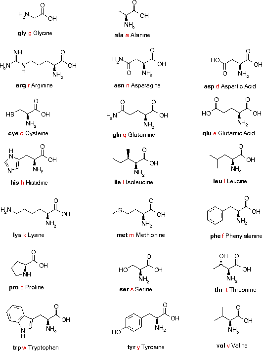

Name Abbr. Condensed structural formula ____________________________________________________________ Alanine ala a CH3-CH(NH2)-COOH Arginine arg r HN=C(NH2)-NH-(CH2)3-CH(NH2)-COOH Asparagine asn n H2N-CO-CH2-CH(NH2)-COOH Aspartic acid asp d HOOC-CH2-CH(NH2)-COOH Cysteine cys c HS-CH2-CH(NH2)-COOH Glutamine gln q H2N-CO-(CH2)2-CH(NH2)-COOH Glutamic acid glu e HOOC-(CH2)2-CH(NH2)-COOH Glycine gly g NH2-CH2-COOH Histidine his h NH-CH=N-CH=C-CH2-CH(NH2)-COOH |__________| Isoleucine ile i CH3-CH2-CH(CH3)-CH(NH2)-COOH Leucine leu l (CH3)2CH-CH2-CH(NH2)-COOH Lysine lys k H2N-(CH2)4-CH(NH2)-COOH Methionine met m CH3-S-(CH2)2-CH(NH2)-COOH Phenylalanine phe f Ph-CH2-CH(NH2)-COOH Proline pro p NH-(CH2)3-CH-COOH |_________| Serine ser s HO-CH2-CH(NH2)-COOH Threonine thr t CH3-CH(OH)-CH(NH2)-COOH Tryptophan trp w Ph-NH-CH=C-CH2-CH(NH2)-COOH |________| Tyrosine tyr y p-HO-Ph-CH2-CH(NH2)-COOH Valine val v (CH3)2CH-CH(NH2)-COOH
